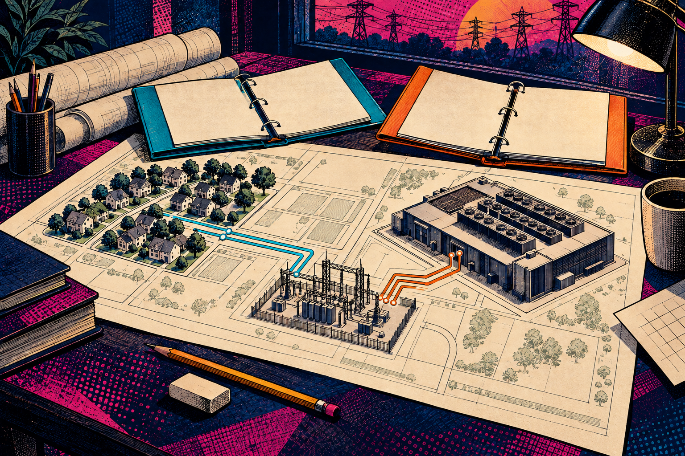

The House passed a data-centre power bill. Your rate did not change.

The Story
The U.S. House passed H.R. 9340, the Ratepayer Protection Act, by 417–3 on September 16. That vote did not make the bill law or change a household electricity rate.
The bill calls a qualifying site a “large-load customer”: a covered non-residential computing or data facility with peak demand of at least 100 megawatts at one site or campus. If enacted and adopted locally, its rate would be designed to recover the full “incremental cost” — the additional grid-upgrade cost needed to serve that particular large customer. The customer would also provide financial assurance before construction.
The LAiDIES Read
The bill would require state utility regulators and nonregulated utilities to consider the standard: begin consideration or set a hearing within one year, then complete it and make a determination within two. It would not itself impose one identical rate across the country.
On September 17, Senator Jon Husted tried to secure Senate passage by unanimous consent. Senator Martin Heinrich objected, arguing that consideration was too weak. Both offices describe that result; their policy claims remain advocacy. Senate bill S.5028 was referred to committee September 18. No inspected official source establishes Senate passage of H.R. 9340 or enactment through September 23.
What This Means for You
Your electricity bill is set through your utility and its regulator or other governing authority. Whether those upgrade costs reach existing customers depends on local rules, the project and the approved rate design. H.R. 9340 addresses that question, but it guarantees neither adoption of its standard nor a household saving.
For a local claim, ask: which utility or commission is deciding, which upgrade is needed, who would pay under the proposed rate, and whether you are looking at a bill, an enacted rule or an approved rate case.
The Cocktail Party Explanation
“The House passed a plan for states and utilities to consider making very large data centres cover their grid-upgrade costs. It is not law, and it did not lower anyone’s bill.”
Class Notes
A “federal standard” can sound automatic. In this bill, the federal requirement would be to consider the standard and make a determination; the actual rate still depends on the relevant state regulator or nonregulated utility.